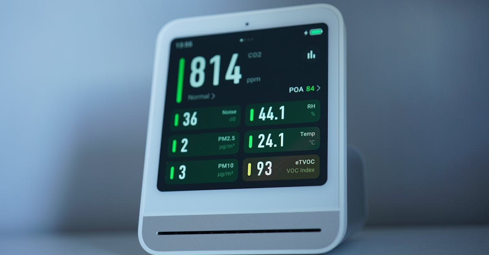

Un Changement de Garde Stratégique chez Apple
La nouvelle a secoué la Silicon Valley : Deirdre O'Brien, la vice-présidente senior du marketing chez Apple, en charge de produits aussi emblématiques que l'Apple Watch, les AirPods, ainsi que des initiatives majeures dans les domaines de la santé connectée et de la maison intelligente, a annoncé son départ à la retraite. Cette annonce, relayée par Bloomberg, marque la fin d'une ère pour des divisions qui ont été au cœur de la stratégie de croissance et d'innovation d'Apple ces dernières années. La contribution de Mme O'Brien a été déterminante dans le positionnement de l'Apple Watch comme un leader incontesté du marché des wearables, intégrant des fonctionnalités de santé de plus en plus sophistiquées, allant du suivi ECG à la détection de chutes. De même, les AirPods ont redéfini le marché des écouteurs sans fil, devenant un accessoire quasi indispensable pour les utilisateurs d'écosystèmes Apple. Son rôle s'étendait également à la vision d'Apple pour la maison connectée, un segment où la firme cherche à renforcer sa présence face à une concurrence accrue. Ce départ soulève inévitablement des questions quant à la continuité de ces stratégies et à la direction future de ces produits phares. Dans un secteur technologique en perpétuelle mutation, où l'innovation est reine, la succession à ces postes clés revêt une importance capitale. Les investisseurs scrutent attentivement ces mouvements, car ils peuvent signaler des orientations stratégiques futures, des priorités révisées, voire des changements dans le rythme de développement de nouveaux produits ou services. L'impact de ces décisions internes chez un géant comme Apple ne se limite pas à ses propres résultats ; il peut avoir des répercussions sur l'ensemble de l'industrie technologique et, par extension, sur les marchés financiers mondiaux.
👉 À lire : Chine : La tech détrône le "vin d'empereur" en bourse

L'Apple Watch et l'Écosystème Santé Connectée : Un Modèle Disruptif
L'Apple Watch, sous la houlette de Deirdre O'Brien, a transcendé son rôle initial de simple accessoire pour devenir une plateforme dédiée à la santé et au bien-être. L'intégration de capteurs avancés, capables de réaliser des électrocardiogrammes (ECG), de mesurer la saturation en oxygène dans le sang (SpO2), et de surveiller le rythme cardiaque, a positionné la montre d'Apple comme un outil de prévention et de suivi médical. Ces fonctionnalités, validées par des études cliniques et reconnues par les autorités sanitaires, ont non seulement renforcé la proposition de valeur de l'appareil, mais ont également ouvert la voie à une nouvelle ère de la santé personnalisée. L'entreprise a su capitaliser sur la collecte massive de données de santé, créant un écosystème où ces informations peuvent être centralisées, analysées et partagées (avec le consentement de l'utilisateur) avec des professionnels de santé. Cette approche, bien que soulevant des questions sur la confidentialité des données, représente un potentiel énorme pour la recherche médicale et l'amélioration des diagnostics. Le succès des AirPods, quant à lui, illustre la capacité d'Apple à créer des marchés et à définir les standards de l'industrie. La simplicité d'utilisation, l'intégration transparente avec l'iPhone et la qualité audio ont fait des AirPods un produit culturellement influent. Ces succès combinés témoignent d'une stratégie marketing et produit particulièrement efficace, capable de transformer des innovations technologiques en phénomènes de consommation. Le départ d'une dirigeante ayant joué un rôle si central invite à s'interroger sur la pérennité de cette dynamique. Comment l'intelligence artificielle, déjà présente dans les algorithmes d'analyse de santé de l'Apple Watch, pourrait-elle être davantage exploitée ? Les futurs développements s'orienteront-ils vers une personnalisation encore plus poussée, voire vers des applications prédictives basées sur l'IA ? Ces questions sont d'autant plus pertinentes dans le contexte actuel où les technologies d'IA progressent à un rythme exponentiel, promettant de révolutionner de nombreux secteurs, y compris la santé et la finance.
👉 À lire : Netflix : Chute en Bourse après des Perspectives Décevantes
La Maison Intelligente et l'Avenir des Écosystèmes Connectés
Le portefeuille de Deirdre O'Brien incluait également la stratégie d'Apple pour la maison intelligente. Bien qu'Apple ne propose pas encore un écosystème aussi ouvert et diversifié que certains concurrents dans ce domaine, la firme a fait des pas significatifs avec des produits comme HomePod et l'intégration poussée de HomeKit dans ses appareils. L'objectif d'Apple est clair : créer une expérience utilisateur fluide et sécurisée, où tous les appareils connectés communiquent entre eux de manière transparente. La philosophie d'Apple repose sur la simplicité, la confidentialité et une intégration profonde avec ses autres produits et services. Contrairement à d'autres écosystèmes, Apple privilégie une approche plus contrôlée, garantissant ainsi une meilleure sécurité et une expérience utilisateur cohérente. Cependant, cela peut aussi limiter la flexibilité et le choix pour les consommateurs. Le marché de la maison intelligente est en pleine expansion, tiré par la demande croissante pour le confort, l'efficacité énergétique et la sécurité. Les assistants vocaux, les systèmes d'éclairage connectés, les thermostats intelligents et les caméras de sécurité deviennent de plus en plus courants. Dans ce contexte, le rôle de Deirdre O'Brien était crucial pour définir comment Apple allait non seulement concurrencer, mais aussi potentiellement redéfinir ce marché. Son départ ouvre une période d'incertitude quant aux ambitions futures d'Apple dans ce secteur. Va-t-on assister à une accélération des développements, à une ouverture accrue de la plateforme HomeKit, ou à une focalisation accrue sur l'intégration avec les services existants ? L'analyse des tendances du marché montre une convergence croissante entre la maison connectée, la santé et l'intelligence artificielle. Les données collectées par les appareils domestiques pourraient, par exemple, être utilisées pour optimiser la consommation d'énergie, améliorer la sécurité, ou même contribuer au bien-être des occupants. L'intelligence artificielle jouera un rôle central dans la gestion de ces flux de données complexes et dans la création d'interactions plus intuitives.

Impact sur les Marchés Financiers et l'Innovation Technologique
Le départ d'un dirigeant de cette envergure chez Apple, une entreprise dont la capitalisation boursière dépasse régulièrement les trillions de dollars, ne passe jamais inaperçu sur les marchés financiers. Bien que le cours de l'action Apple puisse réagir de manière limitée à court terme, ces changements managériaux peuvent influencer la perception des investisseurs quant à la stratégie future de l'entreprise et à son potentiel d'innovation. Les analystes financiers chercheront à comprendre qui succédera à Deirdre O'Brien et quelles seront les priorités de ce nouveau leadership. La confiance dans la capacité d'Apple à continuer de lancer des produits révolutionnaires et à maintenir sa croissance est un facteur clé pour ses investisseurs. La diversification des revenus d'Apple, notamment grâce aux services et aux wearables, a été un pilier de sa performance financière récente. Le départ d'une figure clé derrière ces succès peut semer un doute, même léger, sur la continuité de cette trajectoire. Dans un environnement économique mondial marqué par l'incertitude, les mouvements au sein des entreprises technologiques les plus influentes sont scrutés de près. Les investisseurs cherchent des signes de stabilité, de croissance et d'innovation. Les entreprises capables de naviguer dans ce paysage complexe, notamment en tirant parti des nouvelles technologies comme l'intelligence artificielle, sont celles qui sont le mieux placées pour réussir. Le secteur de la technologie, et plus particulièrement celui de la santé connectée et de la maison intelligente, est en constante évolution. Les entreprises qui investissent massivement dans la recherche et le développement, et qui parviennent à anticiper les besoins futurs des consommateurs, sont celles qui créent de la valeur à long terme. Le départ de Mme O'Brien nous rappelle que même les géants de la technologie sont soumis aux cycles de renouvellement et aux défis de la gestion du changement.
Intelligence Artificielle : Le Connecteur Inévitable entre Tech et Finance
L'omniprésence de l'intelligence artificielle dans les annonces de produits Apple, qu'il s'agisse d'optimiser les performances de l'Apple Watch, d'améliorer la qualité audio des AirPods, de rendre la maison plus intelligente ou de renforcer la sécurité des données, souligne une tendance de fond. L'IA n'est plus une technologie futuriste ; elle est au cœur de l'innovation actuelle et de la stratégie des plus grandes entreprises technologiques. Pour un blog axé sur l'IA crypto trading, cette évolution est particulièrement pertinente. Les mêmes algorithmes sophistiqués qui permettent à une montre de détecter des anomalies cardiaques ou à un assistant vocal de comprendre des requêtes complexes sont à la base des systèmes de trading automatisé. L'analyse prédictive, le traitement du langage naturel, l'apprentissage machine – ces domaines de l'IA sont fondamentaux pour décrypter les marchés financiers, identifier des tendances subtiles et exécuter des stratégies de trading avec une rapidité et une précision qu'aucun humain ne peut égaler. Le départ d'un dirigeant chez Apple, bien qu'éloigné du monde de la crypto, met en lumière comment les avancées technologiques dans un domaine peuvent inspirer ou être appliquées dans un autre. La capacité d'Apple à intégrer l'IA de manière transparente dans des produits de consommation courante démontre le potentiel de cette technologie à transformer des industries entières. Dans le domaine des cryptomonnaies, où la volatilité est extrême et où les informations circulent à une vitesse fulgurante, l'IA offre des outils puissants pour naviguer dans cette complexité. Les agents IA, capables d'analyser en continu des millions de points de données – prix, volumes, actualités, sentiment des réseaux sociaux – peuvent identifier des opportunités de trading et exécuter des transactions 24h/24, 7j/7, minimisant ainsi les risques liés aux décisions humaines émotionnelles ou aux délais de réaction. L'innovation chez Apple, même dans des secteurs apparemment distincts, renforce l'idée que l'IA est le moteur principal de la prochaine vague de transformations technologiques et économiques.
Opportunités de Marché et l'Essor des Agents IA
Alors que les géants de la technologie comme Apple continuent d'innover, le paysage des marchés financiers, y compris celui des cryptomonnaies, évolue à une vitesse sans précédent. La volatilité inhérente aux actifs numériques, combinée à la complexité croissante des stratégies d'investissement, crée un terrain fertile pour l'émergence de solutions basées sur l'intelligence artificielle. Ces agents IA, conçus pour analyser les marchés en temps réel et exécuter des transactions de manière autonome, représentent une avancée majeure pour les investisseurs cherchant à optimiser leurs rendements tout en gérant les risques. Contrairement aux approches traditionnelles, qui peuvent être limitées par la fatigue humaine, les biais émotionnels ou les contraintes de temps, un agent IA fonctionne sans relâche. Il peut traiter un volume colossal de données – des indicateurs techniques aux flux d'actualités mondiales, en passant par les analyses de sentiment sur les réseaux sociaux – pour identifier des schémas et des opportunités que l'œil humain pourrait manquer. La capacité de ces systèmes à apprendre et à s'adapter en continu aux conditions changeantes du marché est un atout considérable. Pour les investisseurs dans l'espace crypto, où les mouvements de prix peuvent être rapides et imprévisibles, disposer d'un outil capable de réagir instantanément et de manière rationnelle est un avantage compétitif indéniable. Le développement de tels agents IA s'inspire directement des progrès réalisés dans des domaines comme le traitement du langage naturel, la reconnaissance d'images et l'apprentissage profond, des technologies que des entreprises comme Apple intègrent déjà dans leurs produits grand public. La démocratisation de ces technologies permet désormais de proposer des solutions de trading sophistiquées, accessibles à un public plus large. Ces agents IA ne remplacent pas la stratégie globale de l'investisseur, mais agissent comme des assistants ultra-performants, exécutant des tâches complexes et répétitives avec une efficacité redoutable, 24 heures sur 24 et 7 jours sur 7.
Conclusion : Anticiper l'Avenir avec l'IA
Le départ de Deirdre O'Brien chez Apple, bien qu'étant un événement interne à une entreprise technologique, résonne bien au-delà de la Silicon Valley. Il souligne l'importance cruciale de la stratégie produit, de l'innovation continue et du leadership dans un monde en rapide évolution. Les domaines qu'elle supervisait – wearables, santé connectée, maison intelligente – sont tous des secteurs où la technologie, et particulièrement l'intelligence artificielle, est appelée à jouer un rôle de plus en plus prépondérant. Ces avancées technologiques, qu'elles se manifestent dans un Apple Watch ou dans un algorithme de trading, transforment notre quotidien et redéfinissent les possibilités d'investissement. Dans le domaine des cryptomonnaies, caractérisé par sa rapidité et sa complexité, l'adoption de l'IA n'est plus une option, mais une nécessité pour ceux qui visent l'excellence opérationnelle. Les agents IA qui peuvent trader les cryptos pour vous, 24h/24, ne sont pas une simple curiosité technologique ; ils représentent l'avant-garde d'une nouvelle manière d'aborder les marchés financiers. En analysant des données massives, en s'adaptant aux conditions changeantes et en exécutant des transactions avec une précision algorithmique, ces outils offrent un potentiel de performance et de gestion des risques sans précédent. Chez CryptoMind AI, nous croyons fermement que l'avenir du trading crypto réside dans la synergie entre l'intelligence humaine et la puissance de l'intelligence artificielle. Le départ d'un dirigeant chez Apple nous rappelle que l'innovation est un processus constant, et que les technologies d'aujourd'hui ouvrent la voie aux solutions de demain, y compris dans le monde fascinant et dynamique de la finance décentralisée.